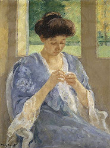

Historia do croche
O Crochê originou-se na Arábia, espalhou-se para Leste para o Tibete e para o oeste na Espanha, de onde seguiu as rotas comerciais árabes para outros países do Mediterrâneo; A primeira evidência do crochê veio da América do Sul, onde uma tribo primitiva teria usado adornos de crochê em ritos de puberdade; Na China, muito cedo era apresentado as bonecas tridimensionais trabalhadas em crochê”. Hoje encontramos diversos materiais, tanto nas agulhas como em diferentes fios prontos para se realizar a arte de fazer crochê, Mas nem sempre foi assim. Os irlandeses, usavam qualquer coisa que pudessem colocar nas mãos para realizar seus trabalhos: primeiramente os dedos, seguidos de ganchos de metal, feitos de madeira, espinha de peixe, osso de animal, chifre, colheres antigas, colher de tartaruga, marfim, cobre, aço, etc..
